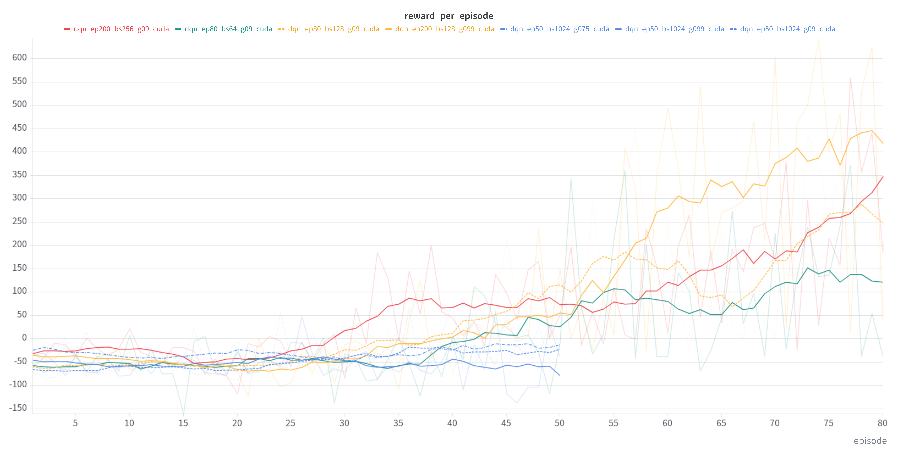
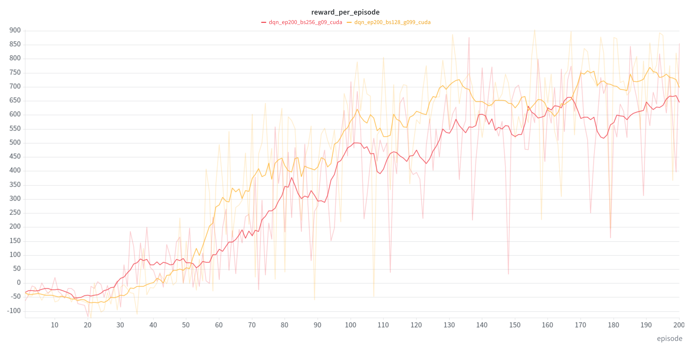
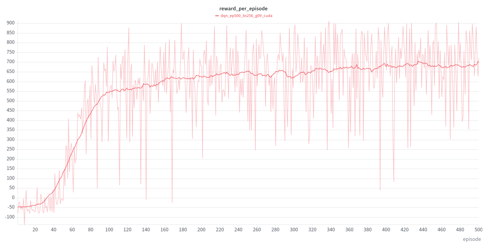

Initial Experiments
To begin with, we kept the number of episodes relatively low in order to save time. On average, the GPU was able to process approximately 10 episodes per minute. Therefore, 50 episodes seemed like a reasonable starting point for our experiments.
Initially, we kept the batch size at 256 and the gamma value at 0.9. However, the car quickly drove off the track. We then increased the batch size to 1024 and conducted several experiments with this setting. We also tested a gamma value of 0, as well as values of 0.99 and 0.75. However, all of these changes resulted in significant performance decreases. With only 50 episodes, the reward remained negative.
We therefore reduced the batch size to 128. With this setting, positive rewards were achieved again after 50 episodes.
To compare different gamma values more reliably, we increased the number of episodes to 80. The results indicated that a gamma value of 0.99 performed slightly better than 0.9.

Increasing the Number of Episodes
However, 80 episodes did not seem to be sufficient for the car to complete an entire lap. We therefore increased the number of episodes to 200.
Even after 200 episodes, the car was still unable to complete a lap. Instead, it simply stopped next to the track. Despite achieving high training rewards of almost 800, the car was still unable to complete the course reliably.
When running the simulation again, the car actually managed to complete a lap. However, it drove backwards for a considerable part of the course.
Thus, although the car was technically able to complete a lap, its driving behaviour was still far from reliable.
Further Batch Size Experiments
To find a more reliable solution, we conducted another series of experiments with different batch sizes. The gamma value was initially reset to its default value of 0.9.
A batch size of 64 produced relatively good rewards, but they were still too low to be considered suitable. The default batch size of 256, on the other hand, achieved rewards comparable to those obtained with a batch size of 128.

However, even after 200 episodes, the car was still unable to reach the destination reliably in the simulation. It quickly left the track and continued driving outside the course.
Final Training with 500 Episodes
To achieve better results, we increased the number of episodes to 500 as a final experiment.

As shown in the graph, the average reward begins to level off after approximately 320 episodes and remains within a range of 650 to 700. Although there are still considerable fluctuations in the individual rewards, the car remained on the track throughout the simulations and successfully reached the finish line in every run.
Conclusion
In conclusion, batch sizes of 128 or 256, combined with gamma values of either 0.9 or 0.99, proved to be suitable configurations for this task.
No significant difference in training time could be observed between these configurations. Both required approximately 20 minutes to complete 200 episodes.
We did not test CPU-only training in the lab for this particular task. However, assuming the same speedup factor of 45 observed in the previous task, processing 500 episodes would theoretically have taken approximately 37.5 hours on the CPU, compared to just 50 minutes on the GPU.
However, this estimate is likely too high. A considerable part of the workload in this task is still processed by the CPU, and data must be transferred between the CPU and GPU. Consequently, the actual speedup is likely to be lower than in the previous task.